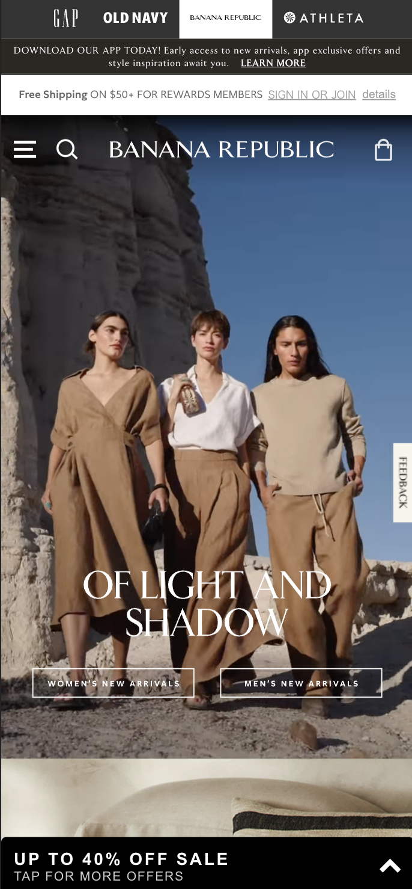
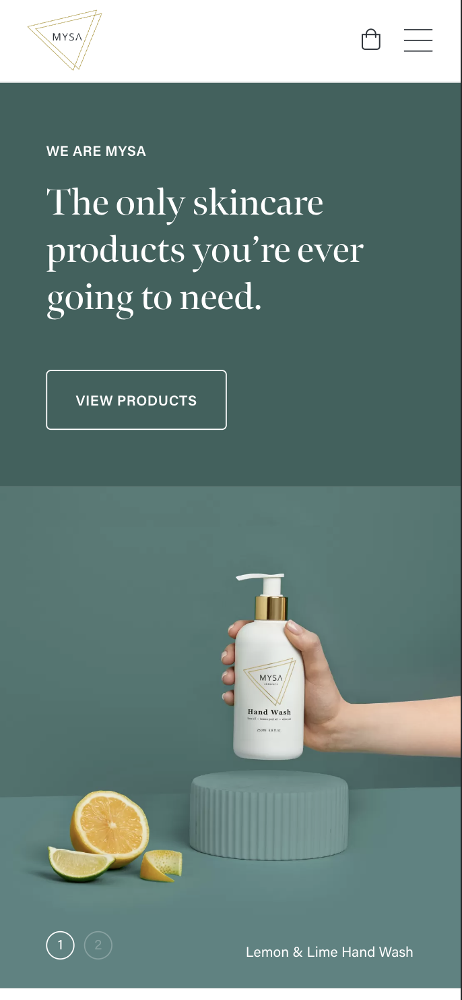

Visual Hierarchy
Netflix
Netflix has an excellent system for ranking the relevance of graphic components. You may influence how users engage with your site and decide whether or not to utilize your services by relying on principles relating to size, color, contrast, white, and other factors.
Whether it's an image, a graphic design, or a website design, visual hierarchy affects what you glance at and concentrate on in a design. It's a crucial component of ct (i.e., how information is arranged and presented for simple comprehension and navigation) and has a significant impact on user experience (UX).
Netflix.comProximity
Banana Republic
The proximity design element was used by assembling all the related pieces close to one another. The business and product information are all at the bottom of the page, with the image presenting one of the products in the middle. The logo and menu are grouped together.
Bananarepublic.gap.comContrast
Mysa Skincare
The brand Razer has a straightforward and subdued color palette. Brighter colors are used to highlight significant elements. The product has a hint of brilliant hues that are incredibly eye-catching, and the logo has a vivid green tint.
High contrast colors are used throughout the interface, notably for the text, ARIA markers, images with alternative text, and other items with the proper labels. The website uses subtle animation and transitional elements as well, yet they aren't overused or distracting.
Mysa-skincare.com